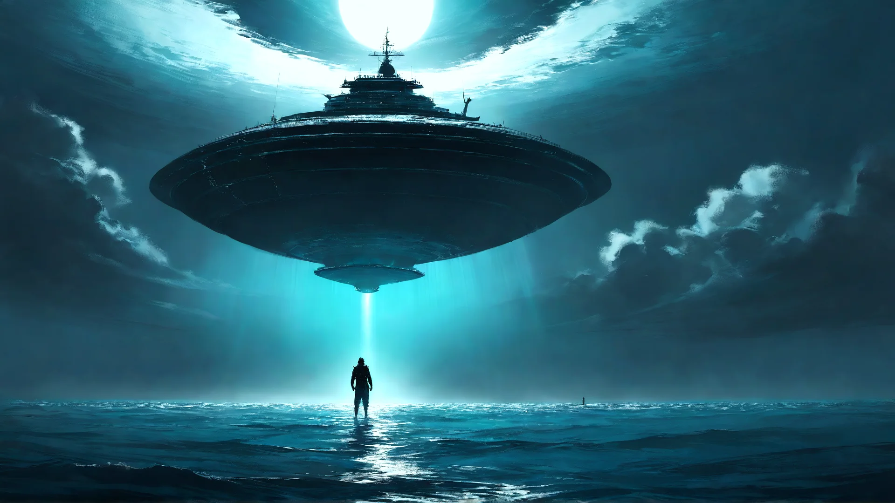

海洋生存 · 基地建造 · 星際復仇
逃出大海
E S C A P E T H E S E A
外星飛船的一炮把你打進海裡，暗湧把你沖到無人的海域。
收集海上漂流垃圾、建造會自己長大的自動化基地、派出 BOT 出海，
最後造一艘太空船飛上月球——把帳算清楚。
開始遊戲
操作說明
WASD 游動 · Shift 衝刺 · 滑鼠瞄準 / 點擊發射 · B 基地 · C 裝備 · J 任務 · M 靜音
v0.5.0-alpha · BUILD 2026-11-04